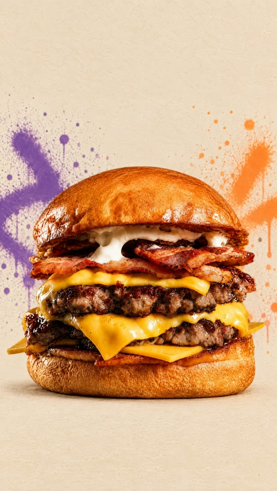

Hamburguesería · Villa Urquiza Las mejores que vas a probar
Gino Doble · $18.000
Pedir ahoraLa carta completa
Cheeseburger, Gino, Otto y veggie. Simples o dobles. Pedí para retirar o con delivery.
Ver la carta
Gino Doble · $18.000
Pedir ahoraCheeseburger, Gino, Otto y veggie. Simples o dobles. Pedí para retirar o con delivery.
Ver la carta